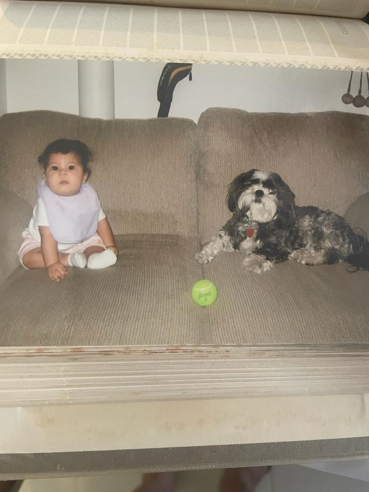
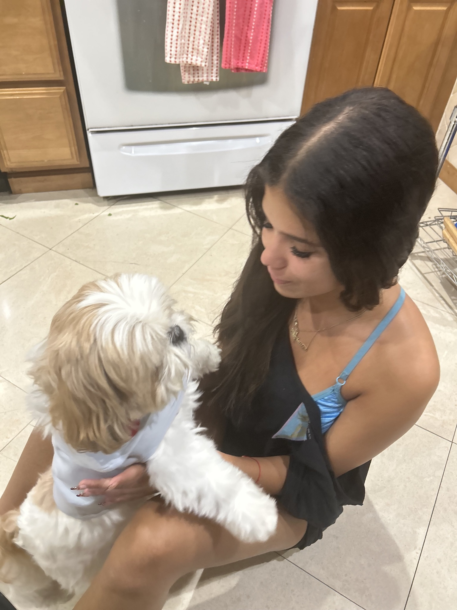
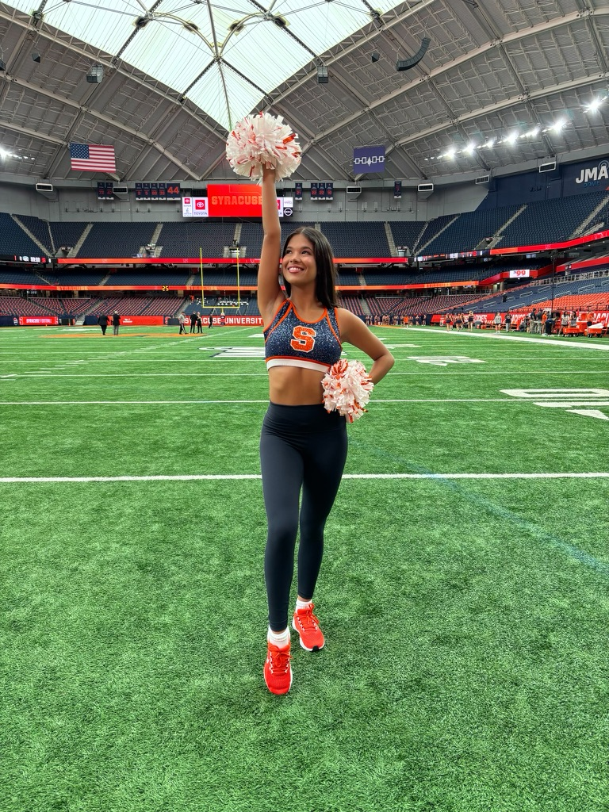
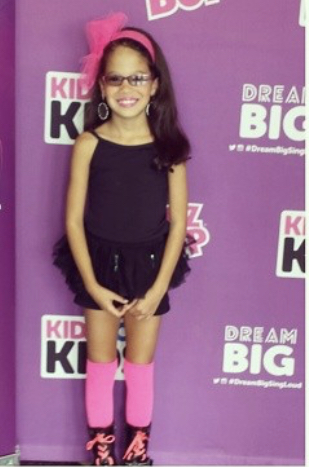

ABOUT ME




More than
my work.
I grew up in North Bergen, New Jersey and grew up living with my mom, my dad, and my little sister. I've also had the gift of being able to own and love two dogs: Monkey and Milly (the best members of the family).
I started dancing when I was 3 years old and it was a major part of my life. I danced competively, I did summer intensives at Alvin Ailey, I performed at Carnegie Hall, and spent my freshman year of college on the Syracuse University D1 Dance Team. There, I performed at football and basketball games and traveled to Florida for a national dance competition against other college dance teams. Although my own personal dance journey is over, I would never be the person I am today if dance wasn't the center of my life for so long. I would never have the motiviation, discipline, and willingness to grow. I am so grateful that I now get to share my passion and knowlege of dance with the next generation teaching dance at La Casita Cultural Center in Syracuse. Fun Fact: I performed in a Kidz Bop concert when I was around 8 years old.
One thing about me is I LOVE pop culture. If you want to talk about a new movie, new music, old movies, old music, or about what celebrity did what, I am your person. I think keeping up with media and what's influencing our culture is so important, and it is SO fun to talk about. I am always that person who references a niche pop culture or meme reference that the people in the room don't understand, which is totally okay, but that is why I love entertainment media so much. To be surrounded by people who share my interests and make something I already talk about too much into a career would be a dream.
EXPLORE MY WORK ↘